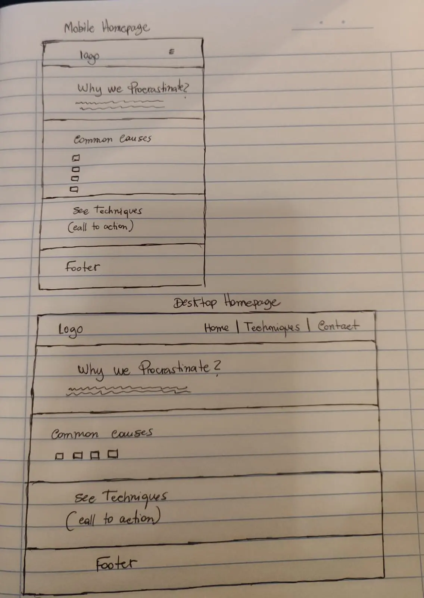

FocusFirst - Site Plan
Site Name
FocusFirst — The site's goal is to help students focus on their schoolwork instead of putting it off, so the name states that priority directly. It also reads as a short instruction: focus first, then everything else follows. The name is short, easy to remember and easy to type.
Site Purpose
FocusFirst is a study-habits website for college students. The site:
- Explains common causes of study procrastination from a behavioral perspective.
- Provides a library of at least fifteen study techniques that users can filter by category and difficulty.
- Offers a contact and feedback form where students can share their own struggles or suggest techniques.
Scenarios
- Why do I procrastinate?
- How do I find the best study technique for me?
- Where can I share what I am struggling with?
Color Scheme
- #F4F7F6
- background color
- #2B2B2B
- text color
- #1F6F78
- header and titles
- #5BBF9E
- left border of cards
Typography
- Poppins
- headings
- Open Sans
- body text
Wireframe
